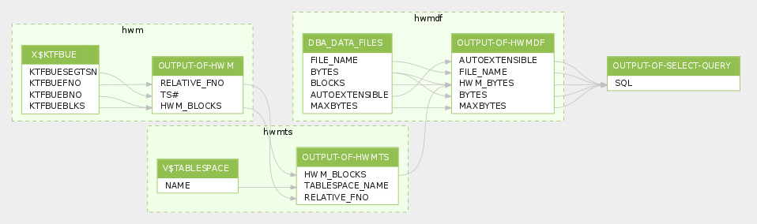

This was first published on https://www.dbi-services.com/blog/resize-your-oracle-datafiles-down-to-the-minimum-without-ora-03297/ (2014-09-08)
Republishing here for new followers. The content is related to the versions available at the publication date.
.
Your datafiles have grown in the past but now you want to reclaim as much space as possible, because you are short on filesystem space, or you want to move some files without moving empty blocks, or your backup size is too large. ALTER DATABASE DATAFILE … RESIZE can reclaim the space at the end of the datafile, down to the latest allocated extent.
But if you try to get lower, you will get:
ORA-03297: file contains used data beyond requested RESIZE value
So, how do you find this minimum value, which is the datafile’s high water mark?
You have the brute solution: try a value. If it passes, then try a lower value. If it failed, then try a higher one.
Or there is the smart solution: find the datafile high water mark.
You can query DBA_EXTENTS to know that. But did you try on a database with a lot of datafiles? It runs forever. Because DBA_EXTENTS is doing a lot of joins that you don’t need here. So my query directly reads SYS.X$KTFBUE which is the underlying fixed table that gives extent allocation in Locally Managed Tablespaces.
Note that the query may take a few minutes when you have a lot of tables, because the information is on disk, in each segment header, in the bitmaps used by LMT tablepaces. And you have to read all of them.
Here is my query:
set linesize 1000 pagesize 0 feedback off trimspool on
with
hwm as (
-- get highest block id from each datafiles ( from x$ktfbue as we don't need all joins from dba_extents )
select /*+ materialize */ ktfbuesegtsn ts#,ktfbuefno relative_fno,max(ktfbuebno+ktfbueblks-1) hwm_blocks
from sys.x$ktfbue group by ktfbuefno,ktfbuesegtsn
),
hwmts as (
-- join ts# with tablespace_name
select name tablespace_name,relative_fno,hwm_blocks
from hwm join v$tablespace using(ts#)
),
hwmdf as (
-- join with datafiles, put 5M minimum for datafiles with no extents
select file_name,nvl(hwm_blocks*(bytes/blocks),5*1024*1024) hwm_bytes,bytes,autoextensible,maxbytes
from hwmts right join dba_data_files using(tablespace_name,relative_fno)
)
select
case when autoextensible='YES' and maxbytes>=bytes
then -- we generate resize statements only if autoextensible can grow back to current size
'/* reclaim '||to_char(ceil((bytes-hwm_bytes)/1024/1024),999999)
||'M from '||to_char(ceil(bytes/1024/1024),999999)||'M */ '
||'alter database datafile '''||file_name||''' resize '||ceil(hwm_bytes/1024/1024)||'M;'
else -- generate only a comment when autoextensible is off
'/* reclaim '||to_char(ceil((bytes-hwm_bytes)/1024/1024),999999)
||'M from '||to_char(ceil(bytes/1024/1024),999999)
||'M after setting autoextensible maxsize higher than current size for file '
|| file_name||' */'
end SQL
from hwmdf
where
bytes-hwm_bytes>1024*1024 -- resize only if at least 1MB can be reclaimed
order by bytes-hwm_bytes desc
/
and here is a sample output:
/* reclaim 3986M from 5169M */ alter database datafile '/u01/oradata/DB1USV/datafile/o1_mf_undotbs1_o9pfojva_.dbf' resize 1183M;
/* reclaim 3275M from 15864M */ alter database datafile '/u01/oradata/DB1USV/datafile/o1_mf_apcpy_o5pfojni_.dbf' resize 12589M;
/* reclaim 2998M from 3655M */ alter database datafile '/u01/oradata/DB1USV/datafile/o1_mf_cpy_qt_oepfok3n_.dbf' resize 657M;
/* reclaim 2066M from 2250M */ alter database datafile '/u01/oradata/DB1USV/datafile/o1_mf_undotbs2_olpfokc9_.dbf' resize 185M;
/* reclaim 896M from 4000M */ alter database datafile '/u01/oradata/DB1USV/datafile/o1_mf_cpy_ocpfok3n_.dbf' resize 3105M;
You get directly the resize statements, with the reclaimable space in comments.
A few remarks about my query:
Note that I’m using that query for quite a long time. I even think that it was my first contribution to Oracle community on the web, about 9 years ago, in the dba-village website. Since then my contribution has grown to forums, blogs, articles, presentations, … and tweets. Sharing is probably addictive 😉
Thanks to #QueryScope @SQLdep here is the query visualisation: 
Nothing difficult here, isn’t it?
In multitenant the query above will display only the root datafiles, multiple times. Here is the query I use in multitenant to show all CDB datafiles that can be resized:
https://github.com/FranckPachot/scripts/blob/master/administration/resize-datafiles.sql
{kind=link}